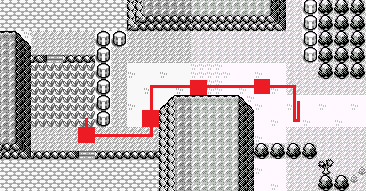

寶可夢 藍版 - Any% NSC
更新：2019/01/29
前言
藍版曾經的 Any% NSC 舊流程和 RBA 一樣繁瑣，
需要跑到尼比市那邊用穿牆巫術 Brock Through Walls (BTW)，
還有一連串的道具溢出操作。
但在最新流程都精簡掉了，
利用角色名字、TID 和寶可夢的數值搭配夢幻漏洞就能進去殿堂，
甚至不需要叫出森林便利商店 (黃版)。
目前最有難度的操作是遊戲前的 TID 亂數控制，
4A Press 遇到烈雀和 2A Press 森林不遇敵，
需要熟練手順和 Buffer Input 技巧，
搭配視覺提示在正確的位置上輸入指令。
Any% NSC 規則
- 上傳必須要有影片證明。
- 使用 RTA 方式計時，
按下 New Game 時開始計時，
在 Credits 前的畫面全白結束計時。
- 允許存檔和退出。
- 投稿記錄必須使用英文版。
- 禁止破壞存檔。
- 其他遊戲漏洞 (trainer-fly，old man，etc) 都可以使用
- 禁止在有既有存檔的狀態下開始遊戲。
你可以在標題畫面用上 + Select + B 刪除存檔。
- 禁止 SFC 的 Super Game Boy (FPS 不準確)，
但是允許 Super Game Boy 2。
- 禁止禁止所有 Game Boy Tower (模擬不準確)。
- 唯一允許的模擬器是最新版本的 gambatte-speedrun (目前為 r649)，
並使用 GBC Bios。
- 全程禁止模擬器的即存功能和加速
- 禁止使用自訂調色板
- 如果使用模擬器，你必須要在以下兩者至少選一項
(1) 十分鐘內 Hard Reset，
記錄影片中必須要有這個 Reset 過程
(2) 視窗擷取整個模擬器畫面，包含視窗邊框
流程概要
- 利用 Buffer Input 取得
理想的 Trainer ID
- 保持
高速對話，完成
送貨事件
- 利用 Buffer Input 和 A Press
抓一隻烈雀
- 利用 Buffer Input 和 A Press
森林不遇敵 + 遇到皮卡丘
- 被皮卡丘電爆，
觸發 Deathfly 巫術
- 跑完剩下步驟
準備
- 版本：
藍版 / 美版
有些巫術只有紅 / 藍的美版才能觸發，
受影響的規則有 Any% NSC、Catch 'Em All 和 Reverse Badge Order
- 實機：
GBA / GBP
- 模擬器 (社群唯一允許)：
gambatte-speedrun Release 5, Build 649
(gambatte-speedrun-r649-psr.zip)
(
需要 GBC Bios)
寶可夢 Speedrun 社群開發的第一、二世代專用模擬器版本，
屬於 gambatte 的分支，在 RNG 方面以 GBA / GBP 為基礎，
發展出大量的亂數控制套路
- 研究使用，禁止投稿：
Bizhawk (Gambatte / CGB in GBA / GBC)
BGB
其他模擬器
重要知識
- 刪除存檔：
上 + Select + B
- Soft Reset：
A + B + Start + Select
- Buffer Input：
預先輸入指令，
讓遊戲「無縫」的接收指令，
不會因為閒置 1 幀而漏掉輸入，
浪費時間導致亂數失控。
- A Press：
在冒險時按到 A 會暫停世界 2 幀，
許多亂數控制要求 1 個或以上的 A Press 操作，
而這次 Blue Any% NSC 總共要按 6 次。
- Yoloball：
保持 Buffer Input 狀態，
讓遇敵到拋球整個過程沒有閒置，
就會一發捕捉寶可夢。
難點在於文字框「野生寶可夢出現辣！」，
只能在 4 幀時間內按掉
(通常會 A -> B 鍵刷過去)。
- Deathfly：
利用滅團觸發夢幻漏洞，
不用離洞繩 / 飛翔 / 瞬間移動等。
[亂數控制] TID Manip
-
利用 Buffer Input 取得理想的 Trainer ID (TID)
- 影片：Youtube ID「
u5_hDQ7H98w」
- 目標 TID: 61896 (F1C8)
- 重點：
(0) 確保沒有存檔 (上 + Select + B 刪除存檔)
(以下步驟確保 Buffer Input 下進行)
(1) 上 + Select + B 跳過流星和胖丁
(2) 上 + Select + B 進入刪除存檔畫面
(3) 進入前按 Start + Select + A + B，
文字框顯示一下 C，之後就會開始 Soft Reset
(4) 先不要動，等到胖丁畫面
(5) 胖丁第一次跳躍時按 A 跳過
(6) 標題按 Start 進入
(7) 選項畫面前按 B 取消
(8) 回到標題先不要動，
等到傑尼龜完全離開畫面後按 Start 進入
(RNG 正確的話會出現飛腿郎
出現臭臭花或是其他寶可夢都會失敗)
(9) 選項畫面前按 A 開新遊戲
- Bizhawk 記憶體位置: System Bus - 0xD359 (2 Bytes, Hex, Big Endian)
設定
- 按住 B 保持高速顯示文字同時，連打 A 推進對話
- 取名：主角 -
m MN a . ♀️ t F，
勁敵 - 預設名字
RED
- 系統選項：
Fast / Off / Shift
真新鎮
- 傷藥 (Potion) 不拿
- 領取小火龍 (Charmander)，
不用命名
- 與宿敵對戰
宿敵戰
-
抓擊 (Scratch) 到底
- 輸贏不重要
- 離開研究所，前往 1 號道路
1 號道路
- 遇敵就逃跑
- 超商取貨
-
繞到大木博士背後對話，宿敵提早出現
- 完成送貨事件後回到常磐市
常磐便利商店
- 購買：
解毒藥 (Antidote) * 1
精靈球 (Poké Ball) * 14
- 離開超商，往左走到 22 號道路
[亂數控制] Spearow Manip
-
抓一隻烈雀 (Spearow)
- 影片：Youtube ID「
Juvj2kGndfo」
- 重點：
(1) 在正確的起點存檔 / 重開機
(2) 在 GBC Logo 期間按「左」改變調色盤
(3) 全程預先按鍵輸入 (Buffer Input)
(4) 不能走錯路線
(5) 特定位置按 A
(6) 命名：
AA
- 改變調色盤：
- 按到 A 位置 (4 個)：

(6) 命名：
AA
- (選) 戰鬥期間保持 Buffer Input 將會一發捕捉烈雀 (Yoloball)
常磐寶可夢中心
- 寄放小火龍到電腦系統
-
恢復體力 (設置傳送點)
- 前往 2 號道路
[亂數控制] Yologlass + Deathfly Manip
-
森林不遇敵 + 遇到皮卡丘
- 影片：Youtube ID「
wmnWBtQiLag」
- 重點：
(1) 在正確的起點存檔 / 重開機
(2) 在 GBC Logo 期間按「左」改變調色盤
(3) 全程預先按鍵輸入 (Buffer Input)
(4) 不能走錯路線
(5) 特定位置按 A
- (選) 戰鬥期間保持 Buffer Input，皮卡丘將會一發爆擊烈雀 (Pika Crit)
- 沒有在一回合內掛掉的話，狂放招式直到結束
- A 鍵輸入位置 (2 個)：
(1) http://pokeworld.herokuapp.com/rb/51#25,26
(2) http://pokeworld.herokuapp.com/rb/51#20,9
剩下步驟
- 再次前往常磐森林，進去後馬上二連戰
- 啄好啄滿
- 二連戰後會進入巫術狀態，走路、觸發對話變慢
- 往右走與昆蟲少年對話，進行戰鬥
- 成功的話，戰鬥結束後會進入殿堂 (關燈)
- Credits 前的畫面全白，結束計時
參考資料
Pokemon NSC 2015 Route - HackMD
https://hackmd.io/TCUNwlQkQUGYj1Icv0r9nw
Append 提供的黃版 NSC 2015 年版攻略翻譯 + 註解
Dabomstew/gambatte-speedrun - GitHub
https://github.com/Dabomstew/gambatte-speedrun
Fork of https://github.com/sinamas/gambatte with Pokémon speedrunning-related changes
Pokémon Blue NSC full Beginner Guide UPDATED - Google 文件
https://docs.google.com/document/d/1l10apKvZgTeOSEKeuhgHVGC73z9-f2FTkuUKHZaPVEA/edit
krazyd4n 在 Speedrun.com 排行榜的攻略區發表的新手指南
Pokémon Blue Any% No Save Corruption Guide by davidpoko - Google 文件
https://docs.google.com/document/d/14Vep4XZ-46nNPb5r2bK3QNut6G8DHzwe8tkZyTZnJrU/edit
上一篇教學的重點整理，相當簡潔
Why do we need to manipulate the trainer ID ? - Speedrun.com
https://www.speedrun.com/pkmnredblue/thread/c2p8x
TID 亂數調整的相關討論
RNG manip on GBC - Speedrun.com
https://www.speedrun.com/pkmnredblue/thread/jpbib
實機與模擬器的 RNG 討論
Pokémon Red/Blue/RNG Manipulation FAQ - Pokemon Speedruns Wiki
http://wiki.pokemonspeedruns.com/index.php?title=Pok%C3%A9mon_Red/Blue/RNG_Manipulation_FAQ
簡單介紹第一世代的亂數控制
[GB / GBA] 寶可夢 藍版 - Any% NSC (Emu) in 13m 44s - Speedrun.com
http://wiki.pokemonspeedruns.com/index.php?title=Pok%C3%A9mon_Red/Blue/RNG_Manipulation_FAQ
幾天下來的研究 + 練習的成果，
過程中多次遇敵拖到時間，
但成功做到 6 次 A Press (+ Yoloball)！
Pokemon Blue - Any% NSC in 13m 36s (RTA) by Spiraster - Youtube
Youtube ID「
79-xyJZ6TVM」
擁有全程輸入顯示的 RTA 記錄影片